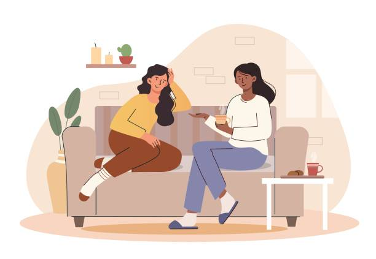
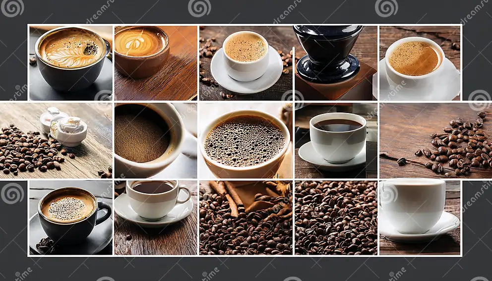

Quiénes somos
Somos Ana y Rosaura, dos amigas que nos conocimos en el Instituto Polo Científico Tecnológico y de Innovación. Desde el primer momento compartimos muchas charlas, ideas y también el gusto por el café.
Con el tiempo nos dimos cuenta de que teníamos el mismo sueño: crear algo juntas. Así fue como nació "AR Coffee", un proyecto que empezamos con mucha ilusión y esfuerzo.
Ana, con sus 28 años, y Rosaura, con 19 años, combinamos nuestras ganas de aprender, crecer y ofrecer un lugar donde las personas puedan sentirse cómodas y disfrutar de un lindo momento.

Lo que queremos transmitir
Este proyecto significa mucho para nosotras, porque no solo es un emprendimiento, sino también el resultado de nuestra amistad y de todo lo que fuimos construyendo juntas. Esperamos que cuando vengas a AR Coffee puedas sentir esa calidez y disfrutar tanto como nosotras.
